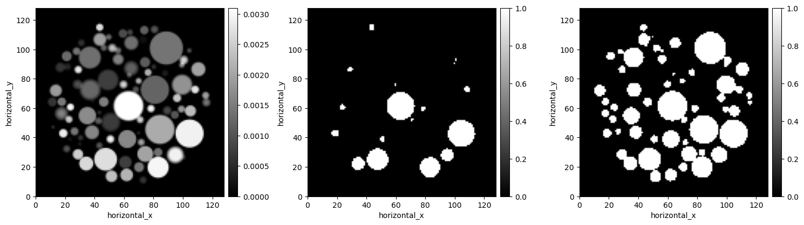
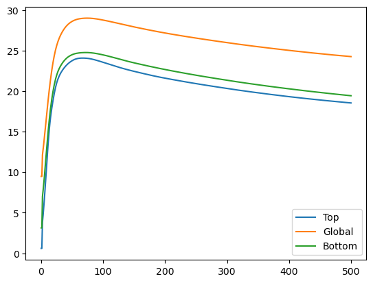

[1]:
# -*- coding: utf-8 -*-
# Copyright 2024 - United Kingdom Research and Innovation
# Copyright 2024 - The University of Manchester
#
# Licensed under the Apache License, Version 2.0 (the "License");
# you may not use this file except in compliance with the License.
# You may obtain a copy of the License at
#
# http://www.apache.org/licenses/LICENSE-2.0
#
# Unless required by applicable law or agreed to in writing, software
# distributed under the License is distributed on an "AS IS" BASIS,
# WITHOUT WARRANTIES OR CONDITIONS OF ANY KIND, either express or implied.
# See the License for the specific language governing permissions and
# limitations under the License.
#
# Authored by: CIL contributors
CIL Callback demonstration#
This notebook runs on CIL Master (built on 14/03/2024) and demonstrates the new callback functionality
[2]:
from cil.utilities import dataexample
from cil.utilities.display import show2D
from cil.recon import FDK
from cil.processors import TransmissionAbsorptionConverter, Slicer
from cil.utilities.quality_measures import psnr
import numpy as np
import matplotlib.pyplot as plt
from cil.plugins.tigre import ProjectionOperator
from cil.optimisation.algorithms import FISTA, Algorithm
from cil.optimisation.functions import LeastSquares, IndicatorBox, ZeroFunction, TotalVariation, WaveletNorm
from cil.optimisation.operators import GradientOperator, WaveletOperator
from cil.optimisation.utilities import callbacks
from cil.framework import DataContainer
from cil.utilities.quality_measures import mse, mae, psnr
# set up default colour map for visualisation
cmap = "gray"
# set the backend for FBP and the ProjectionOperator
device = 'gpu'
Load Data#
[3]:
#%% Load data
ground_truth = dataexample.SIMULATED_SPHERE_VOLUME.get()
data = dataexample.SIMULATED_CONE_BEAM_DATA.get()
twoD = True
if twoD:
data = data.get_slice(vertical='centre')
ground_truth = ground_truth.get_slice(vertical='centre')
absorption = TransmissionAbsorptionConverter()(data)
absorption = Slicer(roi={'angle':(0, -1, 5)})(absorption)
ig = ground_truth.geometry
#%%
recon = FDK(absorption, image_geometry=ig).run()
#%%
show2D([ground_truth, recon], title = ['Ground Truth', 'FDK Reconstruction'], origin = 'upper', num_cols = 2)
# %%
FDK recon
Input Data:
angle: 60
horizontal: 128
Reconstruction Volume:
horizontal_y: 128
horizontal_x: 128
Reconstruction Options:
Backend: tigre
Filter: ram-lak
Filter cut-off frequency: 1.0
FFT order: 8
Filter_inplace: False

[3]:
<cil.utilities.display.show2D at 0x7f276c347550>
Default behaviour#
[4]:
alpha=0.1
A = ProjectionOperator(image_geometry=ig,
acquisition_geometry=absorption.geometry)
F = LeastSquares(A = A, b = absorption)
G = alpha*TotalVariation(lower=0)
algo=FISTA(initial=ig.allocate(0), f=F, g=G)
algo.run(500)
show2D([ground_truth, recon, algo.solution], title = ['Ground Truth', 'FDK Reconstruction', 'TV solution'], origin = 'upper', num_cols = 3)

[4]:
<cil.utilities.display.show2D at 0x7f264d94a380>
Other provided CIL callbacks#
[5]:
algo=FISTA(initial=ig.allocate(0), f=F, g=G, update_objective_interval=10)
algo.run(500, callbacks=[callbacks.ProgressCallback(), callbacks.TextProgressCallback()])
show2D([ground_truth, recon, algo.solution], title = ['Ground Truth', 'FDK Reconstruction', 'TV solution'], origin = 'upper', num_cols = 3)
0/500 ?it/s
10/500 33.51it/s, objective=+8.586e+01
20/500 32.56it/s, objective=+9.047e+00
30/500 31.92it/s, objective=+2.640e+00
40/500 29.97it/s, objective=+1.188e+00
50/500 27.51it/s, objective=+6.928e-01
60/500 26.41it/s, objective=+4.585e-01
70/500 25.72it/s, objective=+3.451e-01
80/500 25.24it/s, objective=+2.741e-01
90/500 25.09it/s, objective=+2.337e-01
100/500 24.89it/s, objective=+2.062e-01
110/500 25.64it/s, objective=+1.870e-01
120/500 27.31it/s, objective=+1.729e-01
130/500 28.33it/s, objective=+1.623e-01
140/500 29.20it/s, objective=+1.541e-01
150/500 29.81it/s, objective=+1.476e-01
160/500 30.34it/s, objective=+1.421e-01
170/500 30.73it/s, objective=+1.375e-01
180/500 31.01it/s, objective=+1.336e-01
190/500 31.14it/s, objective=+1.303e-01
200/500 31.26it/s, objective=+1.275e-01
210/500 31.23it/s, objective=+1.250e-01
220/500 31.37it/s, objective=+1.228e-01
230/500 31.48it/s, objective=+1.208e-01
240/500 31.38it/s, objective=+1.190e-01
250/500 31.44it/s, objective=+1.173e-01
260/500 31.39it/s, objective=+1.159e-01
270/500 31.57it/s, objective=+1.145e-01
280/500 31.59it/s, objective=+1.134e-01
290/500 31.54it/s, objective=+1.123e-01
300/500 31.75it/s, objective=+1.113e-01
310/500 31.73it/s, objective=+1.104e-01
320/500 31.59it/s, objective=+1.096e-01
330/500 30.41it/s, objective=+1.088e-01
340/500 30.60it/s, objective=+1.081e-01
350/500 30.22it/s, objective=+1.075e-01
360/500 30.70it/s, objective=+1.068e-01
370/500 30.78it/s, objective=+1.063e-01
380/500 31.07it/s, objective=+1.057e-01
390/500 30.91it/s, objective=+1.052e-01
400/500 30.90it/s, objective=+1.048e-01
410/500 30.95it/s, objective=+1.043e-01
420/500 30.99it/s, objective=+1.039e-01
430/500 29.62it/s, objective=+1.035e-01
440/500 29.70it/s, objective=+1.031e-01
450/500 29.44it/s, objective=+1.028e-01
460/500 29.83it/s, objective=+1.025e-01
470/500 30.37it/s, objective=+1.022e-01
480/500 30.29it/s, objective=+1.019e-01
490/500 30.56it/s, objective=+1.016e-01
500/500 30.71it/s, objective=+1.013e-01
500/500 29.92it/s

[5]:
<cil.utilities.display.show2D at 0x7f2624118d60>
[6]:
algo.run(100, callbacks=[callbacks.ProgressCallback(), callbacks.TextProgressCallback()])
501/600 ?it/s
511/600 31.03it/s, objective=+1.011e-01
521/600 31.07it/s, objective=+1.008e-01
531/600 30.85it/s, objective=+1.006e-01
541/600 31.13it/s, objective=+1.004e-01
551/600 31.50it/s, objective=+1.002e-01
561/600 31.66it/s, objective=+1.000e-01
571/600 31.30it/s, objective=+9.986e-02
581/600 31.29it/s, objective=+9.969e-02
591/600 31.24it/s, objective=+9.953e-02
600/600 31.19it/s, objective=+9.938e-02
Early stopping (a custom callback example)#
[7]:
class EarlyStopping(callbacks.Callback):
def __call__(self, algorithm):
if algorithm.objective[-1] <= 2e-1: # arbitrary stopping criterion
raise StopIteration
algo=FISTA(initial=ig.allocate(0), f=F, g=G, update_objective_interval=10)
algo.run(500, callbacks=[callbacks.TextProgressCallback(), EarlyStopping()])
show2D([ground_truth, recon, algo.solution], title = ['Ground Truth', 'FDK Reconstruction', 'TV solution'], origin = 'upper', num_cols = 3)
0/500 ?it/s
10/500 27.22it/s, objective=+8.586e+01
20/500 26.72it/s, objective=+9.047e+00
30/500 29.01it/s, objective=+2.640e+00
40/500 30.17it/s, objective=+1.188e+00
50/500 30.84it/s, objective=+6.928e-01
60/500 31.17it/s, objective=+4.585e-01
70/500 31.51it/s, objective=+3.451e-01
80/500 31.75it/s, objective=+2.741e-01
90/500 31.92it/s, objective=+2.337e-01
100/500 32.09it/s, objective=+2.062e-01
110/500 32.11it/s, objective=+1.870e-01
110/500 31.05it/s

[7]:
<cil.utilities.display.show2D at 0x7f262417a4a0>
[8]:
class EarlyStopping(callbacks.Callback):
def __call__(self, algorithm):
if np.mean((algorithm.x.array-ground_truth.array)**2) <= 3e-8: # arbitrary stopping criterion
raise StopIteration
algo=FISTA(initial=ig.allocate(0), f=F, g=G, update_objective_interval=10)
algo.run(500, callbacks=[callbacks.TextProgressCallback(), EarlyStopping()])
show2D([ground_truth, recon, algo.solution], title = ['Ground Truth', 'FDK Reconstruction', 'TV solution'], origin = 'upper', num_cols = 3)
0/500 ?it/s
10/500 31.39it/s, objective=+8.586e+01
20/500 31.84it/s, objective=+9.047e+00
23/500 31.75it/s

[8]:
<cil.utilities.display.show2D at 0x7f2624118d90>
Calculating data discrepancy at each iteration (A custom callback example)#
[9]:
class DataDiscrepancyCallback(callbacks.Callback):
def __init__(self, A, data):
self.f = LeastSquares(A, data)
self.save_values=[]
def __call__(self, algorithm):
self.save_values.append(self.f(algorithm.get_output()))
mycallback_FISTA_lower_bound= DataDiscrepancyCallback(A, absorption)
algo1=FISTA(initial=ig.allocate(0), f=F, g=alpha*TotalVariation(lower=0), update_objective_interval=10)
algo1.run(500, callbacks=[mycallback_FISTA_lower_bound])
mycallback_FISTA_no_lower_bound= DataDiscrepancyCallback(A, absorption)
algo2=FISTA(initial=ig.allocate(0), f=F, g=alpha*TotalVariation(), update_objective_interval=10)
algo2.run(500, callbacks=[mycallback_FISTA_no_lower_bound])
show2D([ground_truth, algo1.get_output(), algo2.get_output()], title=['ground_truth', 'FISTA_lower_bound', 'FISTA_no_lower_bound'], num_cols=3)
show2D([absorption, A.direct(algo1.get_output())-absorption, A.direct(algo2.get_output())-absorption], title=['ground_truth', 'Data error FISTA_lower_bound', 'Data error FISTA_no_lower_bound'], fix_range=[[0,3], [-0.02, 0.02], [-0.02, 0.02]], cmap=['gray', 'seismic', 'seismic'], num_cols=3)
plt.plot(range(10,501), mycallback_FISTA_lower_bound.save_values[10:], label='FISTA TV with lower bound ')
plt.plot(range(10, 501), mycallback_FISTA_no_lower_bound.save_values[10:], label='FISTA TV without lower bound ')
plt.yscale('log')
plt.ylabel('Data discrepancy $\|Ax-y\|_2^2$')
plt.xlabel('Iteration')
plt.legend()


[9]:
<matplotlib.legend.Legend at 0x7f2614863910>

We see that the without the lower bound, the reconstruction overfits to the noisy absorption data
Calculating a noise approximation for each iteration (A custom callback example)#
[10]:
import skimage
class SigmaEstimateCallback(callbacks.Callback):
def __init__(self):
self.save_values=[]
def __call__(self, algorithm):
self.save_values.append(skimage.restoration.estimate_sigma(algorithm.get_output().as_array()))
mycallback_FISTA_TV_alpha_01= SigmaEstimateCallback()
algo1=FISTA(initial=ig.allocate(0), f=F, g=0.1*TotalVariation(lower=0), update_objective_interval=10)
algo1.run(500, callbacks=[mycallback_FISTA_TV_alpha_01])
mycallback_FISTA_TV_alpha_1= SigmaEstimateCallback()
algo2=FISTA(initial=ig.allocate(0), f=F, g=1*TotalVariation(lower=0), update_objective_interval=10)
algo2.run(500, callbacks=[mycallback_FISTA_TV_alpha_1])
show2D([ground_truth, algo1.get_output(), algo2.get_output()], title=['ground_truth', 'FISTA_TV_alpha_01', 'FISTA_TV_alpha_1'], num_cols=3)
show2D([absorption, A.direct(algo1.get_output())-absorption, A.direct(algo2.get_output())-absorption], title=['ground_truth', 'Data error FISTA_TV_alpha_01', 'Data error FISTA_TV_alpha_1'], fix_range=[[0,3], [-0.02, 0.02], [-0.02, 0.02]], cmap=['gray', 'seismic', 'seismic'], num_cols=3)
plt.plot(range(10,501), mycallback_FISTA_TV_alpha_01.save_values[10:], label='FISTA TV alpha=0.1 ')
plt.plot(range(10, 501), mycallback_FISTA_TV_alpha_1.save_values[10:], label='FISTA TV alpha=1.0 ')
plt.ylabel('Noise Estimate')
plt.xlabel('Iteration')
plt.legend()
/home/bih17925/miniconda3/envs/cil_testing2/lib/python3.10/site-packages/numpy/core/fromnumeric.py:3432: RuntimeWarning: Mean of empty slice.
return _methods._mean(a, axis=axis, dtype=dtype,
/home/bih17925/miniconda3/envs/cil_testing2/lib/python3.10/site-packages/numpy/core/_methods.py:190: RuntimeWarning: invalid value encountered in divide
ret = ret.dtype.type(ret / rcount)


[10]:
<matplotlib.legend.Legend at 0x7f260d8df6a0>

We see with a larger regularisation parameter, the resulting image is less noisy.
More complex example, image metric callbacks#
Warning - this is a complex example! But the code may be useful to adapt and reuse
[11]:
class ImageQualityCallback(callbacks.Callback):
"""
Parameters
----------
reference_image: CIL or STIR ImageData
containing the reference image used to calculate the metrics
roi_mask_dict : dictionary of ImageData objects
list containing one binary ImageData object for every ROI to be
evaluated. Voxels with values 1 are considered part of the ROI
and voxels with value 0 are not.
Dimension of the ROI mask images must be the same as the dimension of
the reference image.
metrics_dict : dictionary of lambda functions f(x,y) mapping
two 1-dimensional numpy arrays x and y to a scalar value or a
numpy.ndarray.
x and y can be the voxel values of the whole images or the values of
voxels in a ROI such that the metric can be computed on the whole
images and optionally in the ROIs separately.
E.g. f(x,y) could be MSE(x,y), PSNR(x,y), MAE(x,y)
statistics_dict : dictionary of lambda functions f(x) mapping a
1-dimensional numpy array x to a scalar value or a numpy.ndarray.
E.g. mean(x), std_deviation(x) that calculate global and / or
ROI mean and standard deviations.
E.g. f(x) could be x.mean()
"""
def __init__(self, reference_image,
roi_mask_dict = None,
metrics_dict = None,
statistics_dict = None,
):
# the reference image
self.reference_image = reference_image
self.roi_indices_dict = {}
self.roi_store=[]
self.roi_mask_dict=roi_mask_dict
self.metrics_dict = metrics_dict
self.metrics_store={}
for key, value in self.metrics_dict.items():
self.metrics_store['global_'+key] = []
if roi_mask_dict is not None:
for roi_name, value in roi_mask_dict.items():
self.metrics_store[roi_name+'_'+key] = []
self.statistics_dict = statistics_dict
self.stat_store={}
for key, value in self.statistics_dict.items():
self.stat_store['global_'+key] = []
if roi_mask_dict is not None:
for roi_name, value in roi_mask_dict.items():
self.stat_store[roi_name+'_'+key] = []
def __call__(self, algorithm):
if self.metrics_dict is not None:
for metric_name, metric in self.metrics_dict.items():
ans = metric(self.reference_image, algorithm.x)
self.metrics_store['global_'+metric_name].append(ans)
for roi_name, roi in self.roi_mask_dict.items():
ans = metric(self.reference_image, algorithm.x, mask=roi)
self.metrics_store[roi_name+'_'+metric_name].append(ans)
if self.statistics_dict is not None:
for statistic_name, stat in self.statistics_dict.items():
ans = stat( algorithm.x.array, np._NoValue)
self.stat_store['global_'+statistic_name].append(ans)
for roi_name, roi in self.roi_mask_dict.items():
ans = stat( algorithm.x.array, roi.array.astype('bool'))
self.stat_store[roi_name+'_'+statistic_name].append(ans)
[12]:
def mse(dc1, dc2, mask=None):
''' Calculates the mean squared error of two images
Parameters
----------
dc1: `DataContainer`
One image to be compared
dc2: `DataContainer`
Second image to be compared
mask: array or `DataContainer` with the same dimensions as the `dc1` and `dc2`
The pixelwise operation only considers values where the mask is True or NonZero.
Returns
-------
A number, the mean squared error of the two images
'''
dc1 = dc1.as_array()
dc2 = dc2.as_array()
if mask is not None:
if isinstance(mask, DataContainer):
mask = mask.as_array()
mask = mask.astype('bool')
dc1 = np.extract(mask, dc1)
dc2 = np.extract(mask, dc2)
return np.mean(((dc1 - dc2)**2))
def mae(dc1, dc2, mask=None):
''' Calculates the Mean Absolute error of two images.
Parameters
----------
dc1: `DataContainer`
One image to be compared
dc2: `DataContainer`
Second image to be compared
mask: array or `DataContainer` with the same dimensions as the `dc1` and `dc2`
The pixelwise operation only considers values where the mask is True or NonZero.
Returns
-------
A number with the mean absolute error between the two images.
'''
dc1 = dc1.as_array()
dc2 = dc2.as_array()
if mask is not None:
if isinstance(mask, DataContainer):
mask = mask.as_array()
mask = mask.astype('bool')
dc1 = np.extract(mask, dc1)
dc2 = np.extract(mask, dc2)
return np.mean(np.abs((dc1-dc2)))
def psnr(ground_truth, corrupted, mask=None):
''' Calculates the Peak signal to noise ratio (PSNR) between the two images.
Parameters
----------
ground_truth: `DataContainer`
The reference image
corrupted: `DataContainer`
The image to be evaluated
data_range: scalar value, default=None
PSNR scaling factor, the dynamic range of the images (i.e., the difference between the maximum the and minimum allowed values). We take the maximum value in the ground truth array.
mask: array or `DataContainer` with the same dimensions as the `dc1` and `dc2`
The pixelwise operation only considers values where the mask is True or NonZero..
Returns
-------
A number, the peak signal to noise ration between the two images.
'''
if mask is None:
data_range = ground_truth.as_array().max()
else:
if isinstance(mask, DataContainer):
mask = mask.as_array()
data_range = np.max(ground_truth.as_array(),
where=mask.astype('bool'), initial=-1e-8)
tmp_mse = mse(ground_truth, corrupted, mask=mask)
return 10 * np.log10((data_range ** 2) / tmp_mse)
[13]:
#%% create masks
top = ig.allocate(0)
bottom = ig.allocate(0)
top.fill(
np.asarray(ground_truth.array > 0.8 * ground_truth.max(),
dtype=np.float32)
)
bottom.fill(
np.asarray(np.invert(ground_truth.array < 0.4 * ground_truth.max()),
dtype=np.float32)
)
roi_image_dict = {
'top' : top,
'bottom' : bottom
}
show2D([ground_truth, top, bottom], num_cols=3)

[13]:
<cil.utilities.display.show2D at 0x7f2614860970>
[14]:
img_qual_callback = ImageQualityCallback(ground_truth,
roi_mask_dict = roi_image_dict,
metrics_dict = {'MSE':mse,
'MAE':mae,
'PSNR':psnr},
statistics_dict = {'MEAN': (lambda x, y: np.mean(x, where=y)),
'STDDEV': (lambda x, y: np.std(x, where=y)),
'MAX': (lambda x, y: np.max(x, where=y, initial=0))},
)
[15]:
algo=FISTA(initial=ig.allocate(0), f=F, g=G, update_objective_interval=10)
algo.run(500, callbacks=[img_qual_callback])
show2D([ground_truth, recon, algo.solution], title = ['Ground Truth', 'FDK Reconstruction', 'TV solution'], origin = 'upper', num_cols = 3)

[15]:
<cil.utilities.display.show2D at 0x7f261c4389a0>
[16]:
plt.plot(range(501), img_qual_callback.metrics_store['global_MSE'])
[16]:
[<matplotlib.lines.Line2D at 0x7f260d52d570>]

[17]:
plt.plot(range(501), img_qual_callback.metrics_store['top_PSNR'], label='Top')
plt.plot(range(501), img_qual_callback.metrics_store['global_PSNR'], label='Global')
plt.plot(range(501), img_qual_callback.metrics_store['bottom_PSNR'], label='Bottom')
plt.legend()
[17]:
<matplotlib.legend.Legend at 0x7f260d557a30>

[ ]: